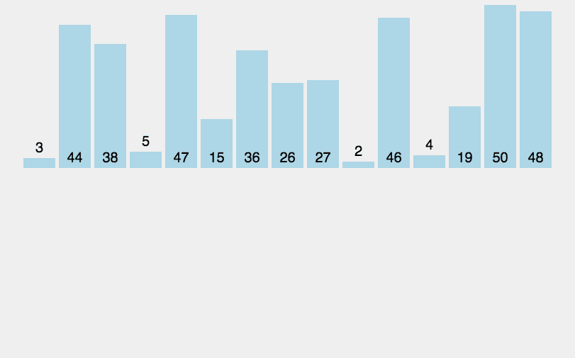
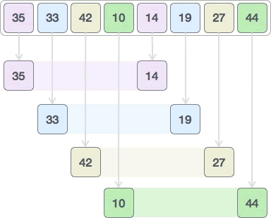
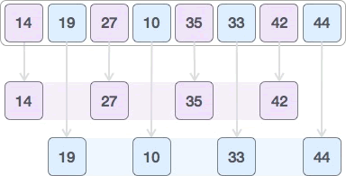
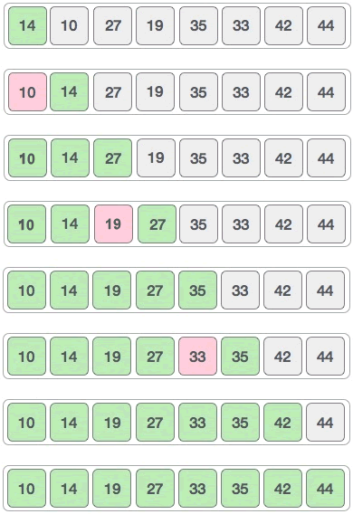

首页 > 编程笔记
希尔排序算法
前面给大家介绍了插入排序算法，通过将待排序序列中的元素逐个插入到有序的子序列中，最终使整个序列变得有序。下图所示的动画演示了插入排序的整个过程：
观察动画不难发现，插入排序算法是通过比较元素大小和交换元素存储位置实现排序的，比较大小和移动元素的次数越多，算法的效率就越差。
希尔排序算法又叫缩小增量排序算法，是一种更高效的插入排序算法。和普通的插入排序算法相比，希尔排序算法减少了移动元素和比较元素大小的次数，从而提高了排序效率。
希尔排序算法的实现思路是：
按照这个思路，我们尝试对 {35, 33, 42, 10, 14, 19, 27, 44} 做升序排序，具体的实现流程是：
1) 间隔 4 个元素，将整个序列划分为 4 个子序列：
采用插入排序算法分别对 {35, 14}、{33, 19}、{42, 27}、{10, 44} 进行排序，最终生成的新序列为：
2) 间隔 2 个元素，再次划分整个序列：
采用插入排序算法分别对 {14, 27, 35, 42} 和 {19, 10, 33, 44} 进行排序：
3) 采用插入排序算法对整个序列进行一次排序，过程如下：
希尔排序算法没有固定的划分标准，这里给大家推荐一种常用的方法，套用如下伪代码：
后续划分整个序列，套用如下公式：
结合伪代码，如下是用希尔排序算法对 {35, 33, 42, 10, 14, 19, 27, 44} 实现升序排序的 C 语言程序：
如下是用希尔排序算法对 {35, 33, 42, 10, 14, 19, 27, 44} 实现升序排序的 Java 程序：
如下是用希尔排序算法对 {35, 33, 42, 10, 14, 19, 27, 44} 实现升序排序的 Python 程序：
以上程序的输出结果均为：

图 1 插入排序算法
图 1 插入排序算法
观察动画不难发现，插入排序算法是通过比较元素大小和交换元素存储位置实现排序的，比较大小和移动元素的次数越多，算法的效率就越差。
希尔排序算法又叫缩小增量排序算法，是一种更高效的插入排序算法。和普通的插入排序算法相比，希尔排序算法减少了移动元素和比较元素大小的次数，从而提高了排序效率。
希尔排序算法的实现思路是：
- 将待排序序列划分成多个子序列，使用普通的插入排序算法对每个子序列进行排序；
- 按照不同的划分标准，重复执行第一步；
- 使用普通的插入排序算法对整个序列进行排序。
按照这个思路，我们尝试对 {35, 33, 42, 10, 14, 19, 27, 44} 做升序排序，具体的实现流程是：
1) 间隔 4 个元素，将整个序列划分为 4 个子序列：

采用插入排序算法分别对 {35, 14}、{33, 19}、{42, 27}、{10, 44} 进行排序，最终生成的新序列为：
2) 间隔 2 个元素，再次划分整个序列：

采用插入排序算法分别对 {14, 27, 35, 42} 和 {19, 10, 33, 44} 进行排序：
3) 采用插入排序算法对整个序列进行一次排序，过程如下：

序列的划分方法
待排序序列如何进行划分，划分多少次，都会影响到希尔排序算法的执行效率。希尔排序算法没有固定的划分标准，这里给大家推荐一种常用的方法，套用如下伪代码：
输入 list //输入待排序序列
interval <- 1 // 初始值为 1
while interval < length(list) / 3: // length(list) 表示待排序序列的长度
interval = interval * 3 + 1
经过计算得出的 interval 的值，就是首次划分序列采用的标准。后续划分整个序列，套用如下公式：
interval = (interval-1)/3
比如说计算第二次划分序列的标准，只需将第一次划分序列时计算得到的 interval 代入公式，求出的新 interval 值就是第二次采用的划分标准。希尔排序算法的具体实现
实现希尔排序算法的伪代码如下：
// list 为待排序序列
shell_sort(list):
len <- length(list) // 记录 list 序列中的元素个数
//初始化间隔数为 1
interval <- 1
//计算最大间隔数
while interval < len/3:
interval <- interval * 3 + 1
//根据间隔数，不断划分序列，并对各子序列排序
while interval > 0:
//对各个子序列做直接插入排序
for i <- interval to len:
temp <- list[i]
j <- i
while j > interval - 1 && list[j - interval] ≥ temp:
list[j] <- list[j - interval]
j <- j - interval
if j != i:
list[j] <- temp
//计算新的间隔数，继续划分序列
interval <- (interval - 1)/3
return list
结合伪代码，如下是用希尔排序算法对 {35, 33, 42, 10, 14, 19, 27, 44} 实现升序排序的 C 语言程序：
#include <stdio.h>
#define N 8 //设定待排序序列中的元素个数
//list[N] 为存储待排序序列的数组
void shell_sort(int list[N]) {
int temp, i, j;
//初始化间隔数为 1
int interval = 1;
//计算最大间隔
while (interval < N / 3) {
interval = interval * 3 + 1;
}
//根据间隔数，不断划分序列，并对各子序列排序
while (interval > 0) {
//对各个子序列做直接插入排序
for (i = interval; i < N; i++) {
temp = list[i];
j = i;
while (j > interval - 1 && list[j - interval] >= temp) {
list[j] = list[j - interval];
j -= interval;
}
if(j != i){
list[j] = temp;
}
}
//计算新的间隔数，继续划分序列
interval = (interval - 1) / 3;
}
}
int main() {
int i;
int list[N] = { 35,33,42,10,14,19,27,44 };
//对待排序序列做希尔排序
shell_sort(list);
//输出已排序序列
for (i = 0; i < N; i++) {
printf("%d ", list[i]);
}
}
如下是用希尔排序算法对 {35, 33, 42, 10, 14, 19, 27, 44} 实现升序排序的 Java 程序：
public class Demo {
// list[N] 为存储待排序序列的数组
public static void shell_sort(int[] list) {
int length = list.length;
// 初始化间隔数为 1
int interval = 1;
// 计算最大间隔
while (interval < length / 3) {
interval = interval * 3 + 1;
}
// 根据间隔数，不断划分序列，并对各子序列排序
while (interval > 0) {
// 对各个子序列做直接插入排序
for (int i = interval; i < length; i++) {
int temp = list[i];
int j = i;
while (j > interval - 1 && list[j - interval] >= temp) {
list[j] = list[j - interval];
j -= interval;
}
if (j != i) {
list[j] = temp;
}
}
// 计算新的间隔数，继续划分序列
interval = (interval - 1) / 3;
}
}
public static void main(String[] args) {
int[] list = { 35, 33, 42, 10, 14, 19, 27, 44 };
shell_sort(list);
// 输出已排好序的序列
for (int i = 0; i < list.length; i++) {
System.out.print(list[i] + " ");
}
}
}
如下是用希尔排序算法对 {35, 33, 42, 10, 14, 19, 27, 44} 实现升序排序的 Python 程序：
#待排序序列
list = [35,33,42,10,14,19,27,44]
def shell_sort():
length = len(list)
# 初始化间隔数为 1
interval = 1
# 计算最大间隔
while interval < (int)(length / 3):
interval = interval * 3 + 1
# 根据间隔数，不断划分序列，并对各子序列排序
while interval > 0:
# 对各个子序列做直接插入排序
for i in range(interval , length):
temp = list[i]
j = i
while j > interval - 1 and list[j - interval] >= temp:
list[j] = list[j - interval]
j = j - interval
if j != i:
list[j] = temp
# 计算新的间隔数，继续划分序列
interval = (int)((interval - 1)/3)
# 对待排序序列做希尔排序
shell_sort()
# 输出已排好序的序列
for i in list:
print(i,end=" ")
以上程序的输出结果均为：
10 14 19 27 33 35 42 44
关注公众号「站长严长生」，在手机上阅读所有教程，随时随地都能学习。内含一款搜索神器，免费下载全网书籍和视频。

微信扫码关注公众号